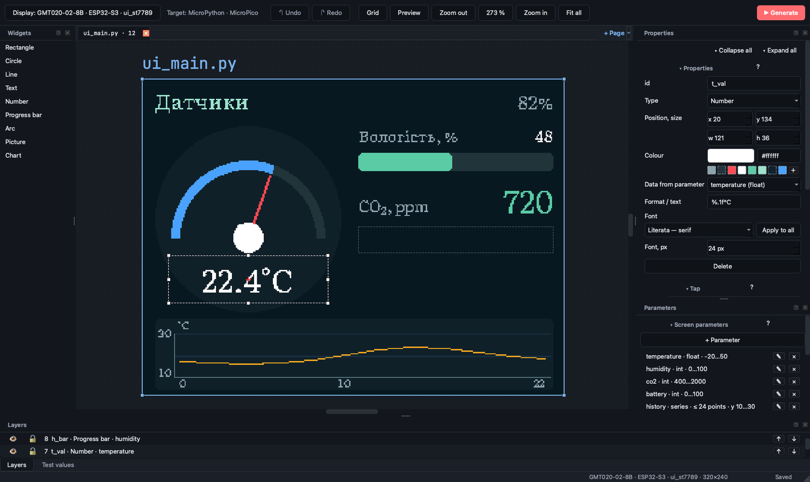
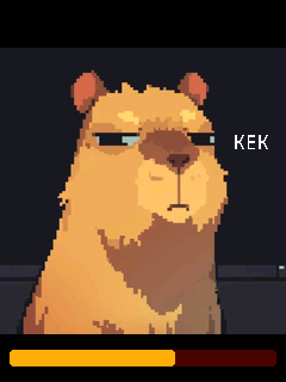
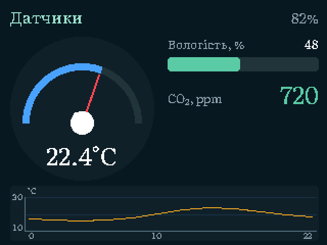
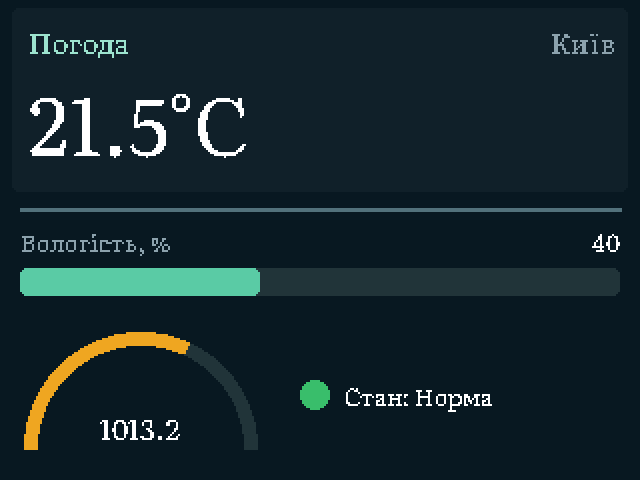
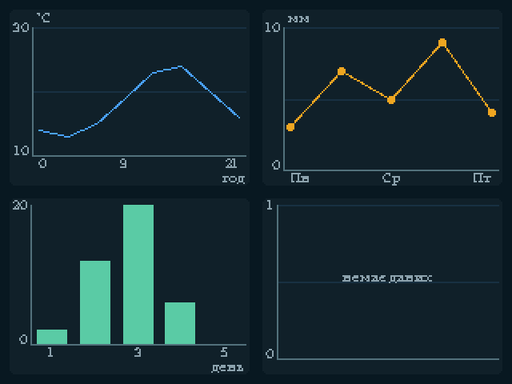
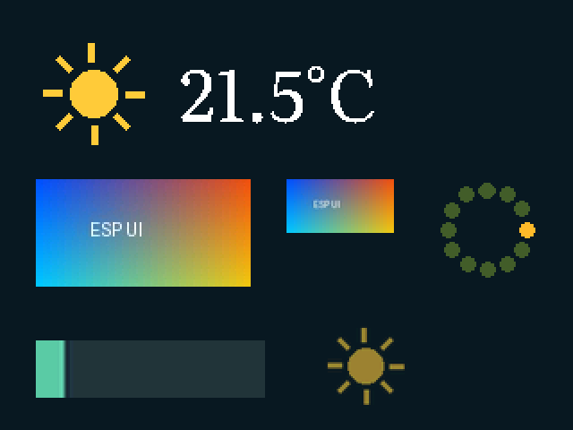
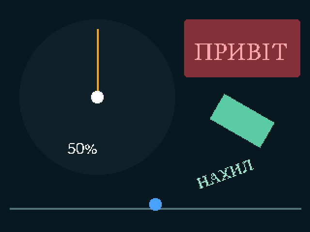
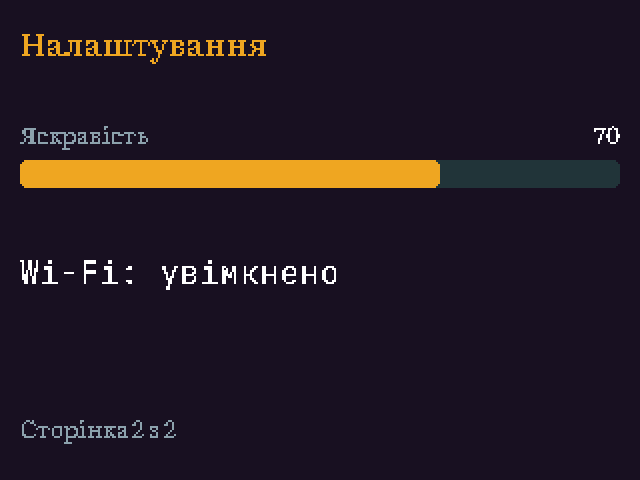

Draw the screen with the mouse, bind widgets to your values, add conditions and touch buttons. ESP UI Builder writes the code — no C, no compiling, stock MicroPython firmware.

The editor on macOS (also Windows and Linux), in English. A Ukrainian interface is built in too.
No display library to learn and no build chain to set up. The generated folder is plain Python files you copy to the board.
Pick your display (or a ready board like the CYD) and place text, numbers, bars, arcs, pictures and charts. Snap, align, group, lock layers.
Add parameters — temperature, state, a label — and connect widgets to them. Conditions change colour, text or visibility; mappings move a gauge needle smoothly.
One click writes a page package: ui_display.py, the driver, fonts, pictures and
ui_main.py with a UI class. Upload with MicroPico or mpremote.
Screens from the repository's examples and a portrait project, rendered by the editor's preview — the same pixels the board draws.




series parameter.


show() from your code.Built for ESP32 boards with a few hundred kilobytes of RAM: what the editor shows is what the board draws, and only what changed gets redrawn.
Rectangle, circle, line, text, number, progress bar, arc, picture, chart — with layers, opacity and rotation.
“If t > 30 → red”, ranges, smooth mappings. Test values preview every state.
Name a procedure per widget; pass actions={…} and taps run in the background. Calibrate on the board.
Click like a finger: see which procedure would run. Tap zones flag buttons too small for a finger.
Literata, JetBrains Mono, Press Start 2P, 8–72 px with Cyrillic — only the glyphs you use go to flash.
ui.update(p) redraws only changed widgets; buffer and picture cache tuned per board (PSRAM aware).
Taken or duplicated pins, input-only GPIOs, widgets off screen, flash and RAM estimates.
Multi-select, align & distribute, groups, copy between pages, project palette, undo, autosave.
Your main.py stays yours. The generated page is a package with a tiny API.
ui.update(p) redraws only what changed.ui.set_temperature(22).ui.listen_touch() runs on a timer.ui.play_icon() replays one.from ui.main import ui_main.import time from ui.main import ui_display, ui_main def start_pump(): # "On tap" name from the editor p["status"] = "Running" display = ui_display.create() ui = ui_main.UI(display) p = dict(ui_main.DEFAULTS) ui.draw(p, actions={"start_pump": start_pump}) ui.listen_touch() # taps run in the background while True: p["temperature"] = read_sensor() ui.update(p) # only changed widgets time.sleep(1) # animations play by themselves
Ready-to-paste snippets for your own main.py. ui_main is the page module; parameter and widget names come from your project.
Read a sensor, change the parameters, redraw only what changed. A series parameter feeds a chart.
import time
from ui.main import ui_display, ui_main
ui = ui_main.UI(ui_display.create())
p = dict(ui_main.DEFAULTS) # every parameter with its default value
ui.draw(p) # the whole screen, once
while True:
t = read_temperature() # your sensor code
p["temperature"] = t
p["status"] = "Hot" if t > 30 else "OK" # conditions in the editor do the colours
p["history"] = p["history"][-23:] + [{time.time(): t}] # the chart keeps 24 points
ui.update(p) # redraws only the widgets that changed
time.sleep(1)
# one value at a time works too:
ui.set_temperature(22.5)
In the editor, give each button an On tap name. In your code, map the names to functions; taps run in the background.
from ui.main import ui_display, ui_main
def start_pump(): # "On tap" = start_pump
p["status"] = "Running" # the page redraws what changed after the call
def stop_pump(): # "On tap" = stop_pump
p["status"] = "Stopped"
ui = ui_main.UI(ui_display.create())
p = dict(ui_main.DEFAULTS)
ui.draw(p, actions={"start_pump": start_pump, "stop_pump": stop_pump})
ui.listen_touch() # no loop needed for taps
# draw() tells you at once if a name from the editor is missing in actions;
# actions=globals() maps every function of the module.
# ui.stop_touch() stops listening; ui.poll_touch() handles taps in your own loop.
Where exactly the finger is, which widget is under it, and a one-time calibration of a resistive XPT2046 panel.
from ui.main import ui_display, ui_main
display = ui_display.create()
ui = ui_main.UI(display)
touch = ui_display.create_touch(display)
point = touch.read() # (x, y) in screen coordinates, or None
if point:
x, y = point
print("touch at", x, y, "widget:", ui.hit(x, y)) # id with "On tap", or None
# XPT2046 calibration: touch four crosses, then paste the printed
# "ESPUI-CAL x_min=… swap_xy=…" line into Display → Touch screen → From the board
ui_display.calibrate_touch()
Animated pictures (GIF, video, frames) play by themselves after draw(): once by default, or in a loop if Play in a loop is ticked.
ui.draw(p) # animations start by themselves
ui.play_spinner() # play "spinner" again from the first frame
ui.play("loading") # the same, by id
if not ui.playing("loading"): # a "once" animation has reached its last frame
print("loaded")
# frame by frame, at your own pace:
ui.draw(p, animate=False)
while True:
ui.tick() # shows the frames that are due
time.sleep_ms(20)
ui.stop_animations() # freeze them; ui.stop() also stops touch
Each page is a module with its own UI class. Switching always redraws the whole screen; the pages share one drawing buffer.
# a project with two pages saved as app.espui → the folder /ui/app on the board
from ui.app import ui_display, ui_main, ui_settings
display = ui_display.create()
pages = {
"main": (ui_main.UI(display), dict(ui_main.DEFAULTS)),
"settings": (ui_settings.UI(display), dict(ui_settings.DEFAULTS)),
}
ui, p = pages["main"]
ui.draw(p)
def show(name):
global ui, p
ui.stop() # the old page's animations and touch
ui, p = pages[name]
ui.draw(p)
def open_settings(): # "On tap" of a button on the main page
show("settings")
Another device on the display's SPI bus (an SD card, a sensor)? Wrap your access so the background touch and animation timer never cuts into it.
import ui_draw
with ui_draw.Busy(): # the timer waits until the block ends
data = read_sd_card() # your own SPI device
# the same for reading the touch panel yourself while listen_touch() runs
with ui_draw.Busy():
point = touch.read()
Generate without opening the editor and upload with mpremote (or MicroPico in VS Code: «Upload project to Pico»).
pip install -e . # once, Python 3.11+ espui generate examples/weather.espui -o main/ # the page package; --page main for one page ESPUI_LANG=en espui generate my.espui -o main/ # messages in English mpremote mkdir :ui mpremote cp -r main :ui/ # → /ui/main on the board mpremote cp my_main.py :main.py # your own main.py mpremote reset
Ready profiles set the controller, size and colour order; a custom profile covers other SPI panels up to 800 px.
| Display | Resolution | Controller | Touch |
|---|---|---|---|
| ESP32 Cheap Yellow Display 2.8" (ESP32-2432S028R)BOARD | 240×320 | ILI9341 / ST7789 | XPT2046 on its own pins |
| GMT020-02-8B 2.0" | 240×320 | ST7789 | — |
| 3.2" TFT / IPS with touch | 240×320 | ILI9341 or ST7789 | XPT2046 |
| 3.5" IPS HD | 480×320 | ILI9488 (18-bit over SPI) | — |
| 1.28" round IPS | 240×240 | GC9A01 | CST816S (optional) |
| Custom size | 16…800 px | ST7789 / ILI9341 / ILI9488 / GC9A01 | any |
Chips: ESP32-S3 (recommended, with PSRAM), ESP32, ESP32-C3. Picking the CYD profile sets the chip and the board's wiring for you. Wiring tables are in the documentation.
No. Flash the regular MicroPython firmware for your chip and copy the generated .py files (and the img/ folder, if any) to the board.
Only changed widgets are redrawn, and the area buffer and picture cache are configurable. On an ESP32-S3 with PSRAM changes appear at once, without visible strips; on boards without PSRAM, lower the buffer in Display → Memory.
Yes — the generated main.py is only an example. Import the page package and call draw() / update() from your own code; regenerating replaces only the page's files.
Yes. The interface is in English and Ukrainian; it follows the system language and can be switched in View → Мова / Language. The in-app help, checks and generation messages are translated too.
Windows, macOS and Linux. It runs from source with Python 3.11+ (pip install -e .), and PyInstaller builds are supported for each system.
Install, open an example, generate, upload — about five minutes.